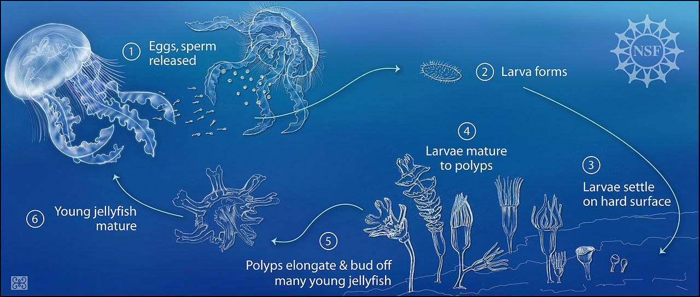

The Life stages of Jellyfish
You might have encountered some gelatinous animals on the beach at times which are drifted on the shore by the strong ocean currents. These creatures with tentacles are what you call Jellyfish.
They are beautiful bell-shaped jelly-like animals that have long trailing tentacles, pulsating bells that give out light with rainbow-like colors. Jellyfish have a complex Life Cycle and changes the way it looks many times during its life.
The jellyfish life cycle begins as eggs and sperms from the male and female Jellyfish. Once the sperms fertilize the eggs, the development of eggs sets off. As soon as the egg development is complete, tiny Planula larvae come out from the mouth of the female. The platonic larva floats on water and settles only when it reaches a specific size and also once it finds a suitable solid surface. After it settles, the larvae morph itself into Polyps. In favorable conditions, Polyp undergoes budding to give birth to a structure called Ephyra, which swims freely. Ephyra grows into Medusa which reproduces sexually and eventually dies.

Stage 1: Eggs and Sperms
Adult Jellyfish are either male or female. Both of them possess organs used for sexual reproduction called gonads. When an Adult Jellyfish reaches its maturity and is ready to mate, the male Jellyfish releases sperms through the only opening in their body, the mouth.
The mouth is located on the bottom of the bell. In the female Jellyfish, some species have “brood pouches” that lie on the underside of the arm of the female Jellyfish.
These brood pouches contain the eggs that get fertilized when the female swims through the sperms of the male. There are some species where the female Jellyfish harbors the eggs in its mouth.
The male sperms flow inside her stomach and fertilize the eggs. Once the egg is fertilized, it leaves the stomach and gets attached to the arm of the female Jellyfish. In Female Medusa(adult jellyfish), the eggs are fertilized internally.
Stage 2: Planula
The egg once fertilized, continues to develop inside female Medusa. The cell divides several times(embryonic development) inside the egg to form an embryo.
The egg hatches as soon as the development is complete and emerges a tiny oval, flattened creature which is known as ‘Planula’ from the female’s mouth. It’s a free-swimming Planula larva at this stage that is set out on its own.
The Planula is covered completely with thin hair-like cilia that beat rapidly and help it to flow with the ocean current for some time till it is all set for the next stage.
This tiny haired Planula floats on the surface of the water for some days. If it survives then after a few days it drops down from the surface and settles finally on a rock or a solid surface that is suitable for it to attach itself.
Stage 3: Attached Planula
As soon as Planula attaches itself to the solid surface or rock, it begins to develop into a Polyp. This Polyp is also known as scyphistoma.
It is cylindrical in shape and looks like a stalk. At the bottom of the Polyp is discs shaped structure and at the top where the mouth lies are a large number of small tentacles.
The Polyp can retain its form for several years. In this stage, it feeds on the small marine animals by drawing them into their mouth with the help of tentacles.
In this stage, the tentacles and the mouth of the polyp are facing upwards. The jellyfish Polyp resembles a sea anemone.
Stage 4: Polyp or Budding Polyp
As the Polyp grows bigger and mature, it starts to bud a new Polyp from its truck part. Slowly with time Polyps form a hydroid colony where every single Polyp is attached and linked to the others by feeding tubes.
When the Polyp reaches a certain age or an appropriate size it moves to its next stage. There is no fixed time for a Polyp to develop further into an Ephyra. It can take up several years too.
Stage 5: Ephyra (Immature Jellyfish)
As the Polyp colony matures and is ready for its next stage in its life cycle, the stalk part of the Polyp starts developing grooves horizontally on the body of the Polyp.
This process of developing grooves is known as strobilation. These grooves get deeper and deeper until the Polyp looks like a stack of saucers. The top part of the Polyp with grooves matures the fastest and buds off as Ephyra, a tiny immature jellyfish.
Ephyra moves away from the budding Polyp and grows. It is a disc-shaped structure just like a coin. It does not possess a proper bell shape but has arm-like protrusions.
Stage 6: Medusa (Adult)
These disc-shaped structures Ephyra is a baby Jellyfish that is free to swim and is on its own. With time it grows into an adult Jellyfish called a Medusa.
Medusa resembles an umbrella-shaped body with tentacles hanging from the lower border. This bell/Umbrella shaped creature is what most people have commonly seen Jellyfish as.
Once the Jellyfish reaches its adult size, it is ready to multiply. A Jellyfish spawns frequently if it gets proper food.